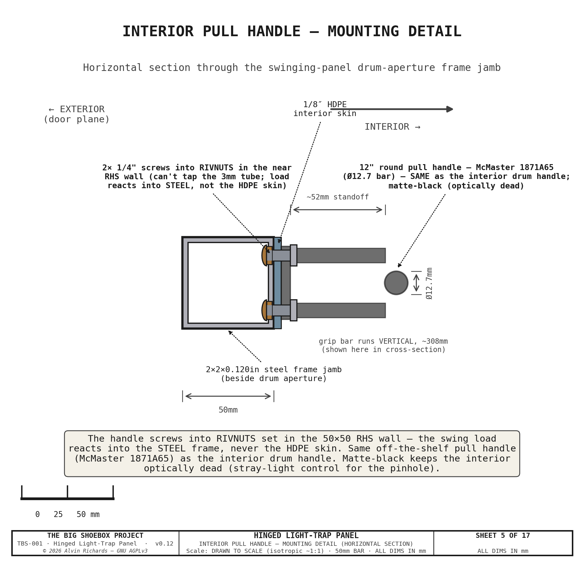

Hinged Light-Trap Panel¶
1. Purpose¶
TBS-001 requires a light-tight seal at the cargo door end of the container that simultaneously allows personnel access during operation without admitting daylight. The hinged light-trap panel fills both roles: it seals the full 2362 × 2388mm cargo door opening as a rigid structural panel, and incorporates a revolving drum light trap that permits operators to enter and exit the darkened interior at any time without opening the panel or breaking the light seal. In case of emergency, or to easy loading and unloading of materials, the whole hinged panel can open fully, being locked from the inside.
Sheet 1 — Front Elevation (1:20): Panel Dimensions, Drum, Hinges, Latches (interior face)

Design goals:
- 100% light exclusion — no straight-line optical path from exterior to interior
- Single-operator personnel access at any time during exposure
- 180° outward swing for full-width loading access (IBC totes, equipment)
- ~56° transport swing about the Ø89 pivot post — carries the B2 punch-out bay inboard of the ISO container doors (true min X +59mm) + hardware
- Emergency egress operable from inside without tools
- Weatherproof for outdoor field deployment (IP44 rated seals)
- Single-person mode conversion (~5 minutes)
Interactive 3D model — the revolving light-trap drum, hinged stepped panel, Ø89 swing pivot, fixed door frame (with the bottom seal lip), and Fan B. Drag to orbit, scroll to zoom.
2. Panel Construction¶
2.1 Stepped Profile¶
The panel has three thickness zones to accommodate the revolving drum in the center while keeping the corners flush with the container walls.
Sheet 2 — Plan Cross-Section (1:10 horiz / 1:1 depth): Housed Revolving Door — Housing, Drum & Light-Tight Geometry

| Zone | Yd range (mm) | Width (mm) | Thickness (mm) | Construction |
|---|---|---|---|---|
| Near corner | 0–653 | 653 | 40 | 4mm PP skin + 3mm Al core + 4mm PP skin (40mm framed); 18mm-ply Fan-B mount band bottom→1125mm |
| Center | 653–1,709 | 1,056 | 120 | 4mm PP skin + 84mm RHS frame + 4mm PP skin |
| Far corner | 1,709–2,362 | 653 | 40 | 4mm PP skin + 3mm Al core + 4mm PP skin (40mm framed) |
The 80mm step between corner and center zones occurs at Yd=653mm and Yd=1709mm (widened in rev 8 to frame the Ø900 housing). The center zone houses the light-trap housing; the corner zones are flush-faced panels that seal against the fixed door frame.
2.2 Frame¶
| Parameter | Value |
|---|---|
| Frame material | 50 × 50 × 3mm RHS mild steel |
| Outer dimensions | 2362 × 2388mm |
| Skin (each face) | 4mm PP plastic sheet (rev11; same material as the drum/housing), set in U-channels — black-pigmented, light-tight, moisture/chemical-proof. Exception: an 18mm exterior-grade plywood band on the Fan B corner (bottom up to 1125mm) for rigid fan/duct mounting + screw retention |
| Interior finish | Black-pigmented sheet (PP) + flat-black touch-in — optically dead at visible wavelengths |
| Frame perimeter | Welded corners, mitered joints |
| Panel weight (full panel: skins + Ø900 housing + B2 bay, excl. drum) | ~171 kg (first-principles: 125 kg framed skins + 22 kg housing + 25 kg B2 bay). The 4mm-PP-skin swap cut ~72 kg vs the 18mm-ply build. See §2.4–2.5 for the movable breakdown + trade study |
2.3 EPDM Perimeter Seal¶
A 20mm closed-cell EPDM compression gasket runs the full perimeter of the panel, seated in an extruded aluminum channel. The gasket compresses against a fixed welded door frame (50 × 50 × 3mm RHS) at X=0 when the four cam latches engage. The seal provides light-tight compression on all four sides.
A second 20mm EPDM gasket — the housing-surround seal — runs as a ring around the Ø900 light-trap housing aperture. Because the housing is fixed (only the drum rotates inside it), this gasket seals the fixed surround to the frame independently of the moving panel, all the way around the opening the housing passes through. It sits in the same exterior door plane (X=0), concentric inboard of the panel-perimeter seal (see §6, light-path #8).
2.4 Movable-Panel Weight Breakdown¶
The transport scheme swings the panel + drum ~56° about the vertical Ø89 pivot, so
the movable assembly is everything that rotates about that pivot. The breakdown
below is first-principles from the geometry constants (reproducible via
src/generators/generate_movable_panel_weight.py); it isolates the swing zone
(Yd 180–2287mm) and deducts the Ø900 housing aperture from the center skins, so it
is slightly lower than the whole-panel figure carried in the
Weight Distribution Report §3.2.
| Group | Component | Construction | kg |
|---|---|---|---|
| A · Skins + frame | Fan B mount band | 18mm ply, 0.47m × 0.99m, 2 faces | 10.2 |
| PP corner skins | 4mm PP (near above band + far) | 14.8 | |
| Corner Al core plates | 3mm 5052 | 20.3 | |
| Center RHS frame | 50×50×3 steel SHS, 11.1m | 49.2 | |
| PP center skins | 4mm PP, Ø900 aperture deducted | 13.7 | |
| A subtotal | 108.1 | ||
| B · Housing | HDPE shell + steel flange/hub | Ø900×5mm, two 80° openings | 21.8 |
| C · Drum | PP C-shell + caps + Ø75 shafts + 2× SKF 6215 + stiffeners + grab rail | Ø864×4mm | 37.8 |
| D · Bay | B2 punch-out bay walls | 4mm PP, 4-wall tube 0.89m deep | 24.9 |
| E · Cage | Drum support cage frame | ~25×25×3 angle, 16.1m box | 16.1 |
| F · Seals | Perimeter + housing EPDM + drum wipers | 20mm foam + felt/brush | 2.7 |
| G · Latches | Cam latches (4) | ~0.5 kg each | 2.0 |
| H · Pivot (rotating) | Thrust/journal bearings + collar/hub | carries leaf at pivot | 13.0 |
| MOVABLE TOTAL (carried-rotating) | ≈226 | ||
| + transport-only locks (stays + 4 saddles) | engaged only when swung | +10 |
By material: steel 103 kg (46%), PP 74 kg (33%), aluminum 20 kg (9%), HDPE 16 kg (7%), plywood 10 kg (4%, Fan B band only), EPDM/other 3 kg.
Findings. rev11 replaced the 18mm plywood skins with 4mm PP plastic sheet (the same material as the drum/housing), set in U-channels — cutting ~72 kg off the panel (movable assembly 283 → 226 kg; whole panel 243 → 171 kg). Plywood is now only the 10 kg Fan B mount band. The largest remaining single item is the steel center RHS frame (49 kg) — the structural spine carrying the drum — which is the only meaningful target left (§2.5). Because the swing axis is vertical, this mass produces no gravity overturning torque at any swing angle; it matters for the thrust-bearing/pivot-post sizing, for handling during assembly (still beyond a two-person lift — an engine crane or gantry hoist is required), and for total container payload.
2.5 Weight-Reduction — Adopted + Residual¶
Adopted (rev11): 4mm PP plastic skins. The 18mm exterior-grade plywood skins were replaced with 4mm polypropylene sheet — the same material as the drum and housing — set in U-channels on the existing frame faces (the 40mm corner / 120mm center envelope is unchanged; only the skin material/thickness changed). Black-pigmented PP is light-tight (proven on the drum), moisture- and chemical-proof in the wet darkroom, and floats in its channel to absorb its higher thermal expansion. A tighter stiffener- channel grid (~400–450mm centers) keeps the floppier 4mm sheet flat at the EPDM seal line. One exception: the Fan B corner keeps an 18mm plywood band (bottom up to 1125mm) for rigid fan/duct mounting + screw retention. Net: ~72 kg off the panel (243 → 171 kg), at roughly comparable material cost (PP sheet + U-channel ≈ ply + adhesive/fasteners; panel BOM rises ~$100, see §8.1).
Residual option (not adopted): aluminum center frame. The 49 kg steel RHS center frame could go to aluminum RHS (up-sized, e.g. 60×60×4, for stiffness) for a further ~22–28 kg — at higher $/kg + TIG welding, and it carries the drum, so it is a structural change deferred pending need. Honeycomb-panel routes (the earlier aggressive option) are now moot: the PP swap already captured most of the available saving at far lower cost and risk.
3. Housed Revolving-Door Light Lock¶
rev 8. Replaces the earlier Ø750mm / 4-fin revolving drum, which failed both personnel-fit and rotation light-tightness (see §3.6). The light lock is now a fixed cylindrical housing + single-opening C-shell drum — the standard commercial-darkroom-door arrangement — sized for a single operator.
Sheet 3 — Drum Vertical Section Elevation (Section A-A): Walking-height orientation confirmation + Details B & C (panel bottom & top light seals)

3.1 Specification¶
| Parameter | Value |
|---|---|
| Type | Fixed cylindrical housing + single-opening C-shell revolving drum (no internal fins) |
| Housing outer diameter | Ø900mm (fixed, built into the panel center zone) |
| Housing openings | Two, 80° arc each, 180° apart — one facing exterior, one facing the interior/walkway |
| Drum (rotating) | Ø864mm C-shell, single 80° opening, ~Ø850mm clear bore |
| Passage width | ~555mm (the 80° opening) — single operator, sideways entry |
| Height | Top at Z=2200mm (upper bearing on panel top rail) |
| Mounting | Carried with the panel — rides at Z=130 on the panel bottom rail (130mm floor gap → clears the tray rim, and the swinging cage passes over the Z115 walkway brackets). Operator steps up ~130mm over the threshold to enter; exits level onto the walkway deck (also Z=130). |
| Wall thickness | 5mm UV-HDPE housing (LT_HOUSING_T) + 4mm PP drum (LT_DRUM_T) — rolled and extrusion-welded plastic skin (rev 9 / B2; was 3mm aluminum); opening edge-stiffened |
| Interior finish | Black-pigmented sheet + flat-black touch-in at welds (no etch-prime) |
| Exterior finish | UV-stabilized black/gray sheet — inherent, no primer |
| Clear walking height | 1910mm (between bearings) |
| Internal baffles | None — light-tightness is by the fixed-housing geometry (§3.3) |
| Weight | housing ~22 kg + rotating drum ~38 kg = ~60 kg (plastic skin, ≈60% of the 3mm-aluminum ~99 kg; the steel shaft/bearings set a floor the shell mass can't drop below) |
3.2 Bearings¶
| Item | Specification |
|---|---|
| Bearing model (×2) | SKF 6215-2RS1 sealed deep-groove ball bearing |
| Bore | 75mm ID, 130mm OD, 25mm wide |
| Clearance | C3 |
| Radial load rating | 52.7 kN (static) |
| Operating temperature | 0–120°C |
| Stub shafts | 75mm Ø × 150mm steel, bolted through an isolated steel hub to the aluminum drum caps (dissimilar-metal joint) |
| Axial retention | Circlip on stub shaft each side |
| Upper mount | Aluminum housing top ring bolted to panel top rail (6 × M10 SS, nylon-isolated) |
| Lower mount | Welded steel floor collar bolted to panel bottom rail (8 × M10 SS) |
| Bearing housing height | 45mm (each) |
3.3 Light Path Verification¶
The light lock is light-tight by geometry. The fixed housing has two openings (one facing the exterior, one facing the interior/walkway), each 80° of arc and 180° apart; the rotating drum is a C-shell with a single 80° opening and no internal fins. Because each opening is narrower than 90° and the two housing openings are 180° apart, the drum opening can never align with both at once — the housing's solid wall always covers whichever opening the drum opening is not facing. So at no rotation angle is there a straight-line path from exterior to interior: daylight entering the bore through the exterior opening is stopped by the drum's solid wall before it can reach the interior opening.
This resolves both failure modes of the earlier Ø750 / 4-fin drum (§3.6): a single operator fits the open ~Ø850mm bore, and there is no transit angle that admits daylight. See Light Trap Selection §5 and Sheet 5 (enter / transit / exit verification).
3.4 Drum Seals¶
| Location | Seal method |
|---|---|
| Top | 12mm closed-cell neoprene wiper ring bonded to drum top cap + silicone bead against ceiling mount plate |
| Bottom | 12mm closed-cell neoprene wiper ring bonded to drum bottom cap + silicone bead against floor mount plate |
| Drum↔housing rotating seal | Felt/brush wiper strips on the two vertical edges of the drum opening sweep against the housing inner wall as the drum turns, blocking light leaking around the opening; top + bottom felt wiper rings close the ~15mm annular running gap |
| Housing-to-panel gap | 15mm radial clearance, closed by 20mm neoprene compression strip bonded to the panel aperture |
| Weather rating | IP44 (splash and rain protection) |
3.5 Handle¶
A 100mm Ø × 400mm stainless steel grab rail is mounted on the interior face only at 900mm height. The handle is attached by a welded bracket — no through-bolt penetration of the drum wall on the exterior face. This eliminates a potential light leak path. The operator enters by pushing the bare exterior drum wall, then uses the interior grab rail to pull the drum closed and brace during exit.
3.6 Access & Light-Tightness Verification (both tests pass)¶
Two questions decide whether a revolving light lock actually works. The rev-8 housed revolving door passes both — the same two questions on which the earlier Ø750mm / 4-fin drum failed (that failure is what drove this redesign).
Sheet 5 — Light-lock access & light-tightness verification

1. Does a person fit? — Yes. The four radial fins are gone; the drum is a single-opening C-shell, so the whole ~Ø850mm bore is clear standing space. The 80° opening gives a ~555mm passage (sideways entry), enough for a single operator to enter and turn inside. Emergency egress remains the whole panel swinging open.
2. As the drum rotates, can daylight enter? — No. The fixed housing's two 80° openings are 180° apart, so the 80° drum opening can never reach both at once: at enter the exterior opening feeds the bore but the interior opening is covered by the drum's solid wall; at transit both housing openings are covered; at exit the exterior opening is covered. There is no straight-line path at any angle.
Why the earlier 4-fin drum failed (for the record). Four fins from the bore center to the wall split the Ø744mm bore into 90° wedges (~250–300mm of body space — a person could not fit), and a revolving drum with a person-sized opening and no fixed housing necessarily bridged exterior and interior at the transit angles. The fix — a fixed housing with two offset openings narrower than 90° — is the standard commercial-darkroom-door arrangement, here custom-built to the panel.
4. Hinges and Latches¶
4.1 Hinges¶
| Parameter | Value |
|---|---|
| Type | Vertical Ø89×8 CHS pivot post (the reused film-plane far-left upright) on a thrust collar + top/bottom hub bearings — STRUCTURAL SIGN-OFF REQUIRED |
| Quantity | 1 post (carries the full bay + housing + drum swing cantilever, ~3.6 kN·m, SF ~3.7 in S355) |
| Position | Far-left panel edge — X=175mm, Yd=2287mm |
| Mounting | Post fixed top + bottom to the container end structure; the swinging frame rotates on the hub bearings (vertical axis ⇒ balanced at any angle, no gravity torque) |
| Swing | ~56° inboard to the transport position (locked by the top + bottom wall stays); swings clear of the door plane for personnel/equipment access |
Under rev 9 (B2) the panel no longer carries just plywood skins: the punch-out bay, the fixed Ø900 housing, and the revolving drum all hang off the swinging leaf, roughly tripling the cantilevered swing moment. rev10 carries that load on a vertical Ø89×8 CHS pivot post (the reused film-plane far-left upright) rather than barrel hinges — the post takes the ~3.6 kN·m swing cantilever on a thrust collar + top/bottom hub bearings (SF ~3.7 in S355). The plastic-skinned drum/housing (LT_DRUM_T = 4mm PP, LT_HOUSING_T = 5mm UV-HDPE) keeps the added mass modest. Because the pivot axis is vertical, the assembly is balanced at any swing angle — no gravity torque and no free-edge sag, so no swing-support caster is needed (the old B2 barrel-hinge + caster scheme is retired). The pivot post and its bearing + weld pattern require a structural engineer's sign-off before fabrication.
4.2 Cam Latches¶
| Parameter | Value |
|---|---|
| Model | Southco C2-33 cam compression latch |
| Quantity | 4 (one at each corner) |
| Positions | 210mm and 2152mm from side edges, 220mm and 2168mm from floor |
| Mounting face | Interior — deliberate safety design for emergency egress |
| Seal compression | Compresses EPDM perimeter gasket against fixed door frame |
Emergency egress: If the revolving drum jams and prevents normal egress, an operator inside the container can release all four interior-mounted cam latches independently and push the panel open outward. The panel swings 180° clear of all interior equipment.
5. Rotating Transport System¶
For transport the entire swinging assembly — the panel center section (Yd 180–2287), the B2 punch-out bay, and the housing + revolving drum — revolves ~56° about a vertical Ø89mm CHS pivot post (the reused film-plane far-left upright, at X=175mm / Yd=2287mm). The swing carries the bay's ~890mm exterior overhang from outside the cargo-door plane to inboard of it, so the ISO doors close. The earlier "slide ~880mm on ceiling rails" scheme is retired — there is no linear carriage.
Two narrow strips stay fixed at the door plane and do not swing: the near strip (Yd 0–180) and the far strip (Yd 2287–2362, which carries the pivot). The cargo doors close outboard of the fixed near strip.
To let the swinging cage cross the X=150mm film-plane rail line, the two left film rails (top-left + bottom-left) lift out of their drop-in saddles and the left walkway + door-end near-deck section lift out before the swing; all are re-seated to datum afterward.
5.1 Panel Positions¶
Sheet 4 — Rotating transport + swing clearance: panel swings 56° about the pivot (camera vs swung), removable left rails

| Position | Bay front-right corner X | Container doors clear? |
|---|---|---|
| Operational (0°) | −890mm (bay protrudes ~890mm outside the door plane) | No — the cargo doors stay open during operation |
| Transport (swung 56°) | +59mm (true min X over the whole swept assembly — computed 58.6mm at this corner) | Yes — the swept frame is fully inboard of the closed door |
5.2 Locking¶
| State | Method |
|---|---|
| Operational (0°) | 4 × interior cam latches (§4) compress the EPDM perimeter + cut seals against the door frame |
| Transport (swung 56°) | Top + bottom wall stays — hook on the frame ↔ eye on the near wall, tensioned by turnbuckle, forming a couple. Engaged after the swing, released before swing-back. |
5.3 Floor Gap¶
The panel + drum cage ride at a 130mm floor gap (Z=130 — the grate-top level set by the +50mm walkway raise), carried by the pivot post on its thrust collar + hub bearings. The gap clears the processing tray rim with margin; it is also the threshold the drum revolves over and the floor datum the swing arc sweeps at.
The housing + drum ride at the same Z=130, so the swinging cage passes over the tray basin — and over the Z115 door-end walkway brackets — rather than colliding with them. The swing (about a vertical pivot, so the bottom edge stays at Z=130 throughout) is what makes the deep Ø900 housing transport-feasible without a slide; a floor-mounted housing would have fouled the tray. The 130mm floor gap is closed in the operational position by the continuous bottom seal lip (§6).
The 130mm gap would otherwise be a straight light path, so it is light-sealed in the operational position by the fixed-frame bottom seal lip described in §6 — a threshold upstand the panel bottom edge recedes into, with an EPDM strip compressed by the lower cam latches. Because the seal is a non-floor compression seal against a frame lip (not a contact seal to the floor), it never fouls the tray rim and lifts clear the moment the latches are released for the swing.
5.4 Transport Conversion Sequence¶
The rotation transport + swing clearance vs the film-plane left mechanism is shown in Sheet 4 (above): the panel + drum swing ~56° about the pivot, pulling the bay inboard of the door plane (true min X +59 mm); the two left film rails are struck (removable) so the swinging cage transitions the X=150 rail plane, then re-seat to the film datum.
The swing carries the drum cage through X=150, where the film-plane mechanism's left edge sits, so the two left film rails (TL + BL) must be struck before the swing and re-seated after (the tapered dowels return the film datum). The muslin screen must be struck regardless — the fragile screen cannot travel mounted. The swing clears the door-end walkway brackets at Z: the cage underside at Z=130 passes over the Z=115 bracket tops, so no walkway bracket is demounted (superseding the old slide, which swept past them at floor level and required striking them).
Order of operations (single person, ~10 min) — see the Operating Manual §5.5:
- Park the revolving drum and pin its rotation.
- Remove the muslin screen from its frame and stow it (rolled); knock down the demountable brace cage (saddle/thumbscrew portals).
- Lift out the left walkway + door-end near-deck section.
- Strike the two left film rails (TL + BL) — release each clamp bar, lift the rail out of its saddles, and stow.
- Release the four Southco cam latches (releases the perimeter + cut seals).
- Swing the frame ~56° inboard about the pivot, assisted (balanced about the vertical axis — no gravity torque; control momentum at the stop).
- Engage the top + bottom wall stays (the transport lock).
- Close the ISO cargo doors (they clear the swung frame by +59 mm).
Re-deployment reverses the sequence.
6. Light Seal Design¶
The swinging panel seals against the fixed door frame in its operational (closed) position. Five light ingress paths are sealed:
| # | Light path | Seal method |
|---|---|---|
| 1 | Panel perimeter → door frame | 20mm EPDM gasket in an aluminum channel, compressed by the 4 × Southco C2-33 cam latches against the fixed door frame at X=0 |
| 2 | Swing cuts → fixed strips | The swinging center+corners separate from the two FIXED strips (near Yd0–180, far Yd2287–2362, which carries the pivot) along vertical cuts at Yd=180 and Yd=2287. A 20mm EPDM cut seal runs the full panel height down each cut, compressed by the cam latches when the panel is latched at the door plane. Replaces the old sliding-carriage beam/guide-slot brush seals. (Sheet 3, Detail D.) |
| 3 | Panel bottom → 130mm floor gap | Fixed-frame bottom seal lip — a continuous steel upstand welded to the threshold, rising above the panel bottom edge (Z=130) across the full panel-bottom width, continuous (no notch) — the housing/drum ride at Z=130 and never reach the floor, so the gap is uniform and the lip closes it as a solid wall; a 20mm EPDM strip on the panel bottom edge recedes into / sandwiches against the lip, compressed by the lower pair of Southco cam latches in the operational ("camera") position. The latches release to lift the seal before the swing. (Sheet 3, Detail B.) |
| 4 | Panel top → frame gap | Fixed-frame top seal lip — the mirror of #3: a steel downstand from the frame top rail reaching ~30mm below the panel top edge. The drum stub shaft stops below the lip, so this lip runs as one continuous member across the full panel-top width — no notch — meeting across the center. A 20mm EPDM strip on the panel top edge sandwiches against it, compressed by the upper pair of cam latches in the operational position; released before the swing. (Sheet 3, Detail C.) |
| 5 | Housing surround → door frame | The Ø900 light-trap housing carries the revolving drum and swings with the panel. A second 20mm EPDM gasket rings the housing aperture (Yd 713–1649, floor gap up to the housing top at Z=2200), concentric inboard of the panel-perimeter seal (#1), seated in the door plane (X=0). In the closed position it seals the housing surround to the frame all the way around the opening — light-tight. (3D: the door_frame() "Housing surround seal", in both the light-trap and overview models.) |
Seal verification: After mode conversion, the operator performs a 5-minute dark-adaptation check inside the container with all seals engaged. Any visible light points are marked with gaffer tape for re-sealing.
7. Fixed Door Frame¶
A fixed welded door frame provides the seal landing surface (perimeter, cut, and lip seals) for the swinging panel, and the structural anchor for the wall-stay eyes.
| Parameter | Value |
|---|---|
| Material | 50 × 50 × 3mm RHS mild steel |
| Position | X=0 (container end wall inner face) |
| Function | EPDM seal landing for the swinging panel perimeter + cut seals + housing surround |
| Attachment | Welded to container end wall structural members |
| Cut-seal landings | 2 × vertical EPDM landings at Yd=180 and Yd=2287 (the swing cuts between the swinging panel and the fixed strips) |
| Bottom seal lip | Continuous 3mm steel upstand welded to the threshold, full panel-bottom width (no notch — drum rides at Z=130) — the EPDM bottom seal compresses against it (see §6 path #3) |
| Top seal lip | Mirror of the bottom: continuous 3mm steel downstand from the frame top rail, reaching ~30mm below the panel top edge, full panel-top width and continuous across the center (the drum does not reach the top, so no notch) — the EPDM top seal compresses against it (see §6 path #4) |
8. Parts List¶
8.1 Panel Structure¶
| Item | Specification | Qty | Est. cost (USD) |
|---|---|---|---|
| 50 × 50 × 3mm RHS mild steel (6 m lengths) | Frame perimeter + internal members | 4 | $120–$160 |
| 4mm black PP plastic sheet (1220 × 2440mm) | Panel skins, both faces (~12 m²) — rev11, replaces 18mm ply | 4 | $260–$420 |
| 18mm exterior-grade plywood | Fan B mount band only (one corner, bottom→1125mm) | 0.5 sheet | $30–$50 |
| 3mm aluminum plate (1220 × 2440mm) | Corner zone core plates | 2 | $360–$460 |
| 20mm EPDM gasket (per meter, closed-cell) | Perimeter seal (~10 m) + housing-surround ring (~6 m) + 2× vertical cut seals at Yd180/2287 (~5 m) | 21 m | $84–$126 |
| Aluminum U-channel (per meter) | Gasket retainer + PP-skin retention (perimeter + housing-surround + stiffener grid) | 40 m | $120–$200 |
| Southco C2-33 cam compression latch | Interior-mounted corner latches (compress the perimeter + cut + lip seals) | 4 | $60–$100 |
| 4mm black PP sheet + EPDM lip | B2 punch-out bay — 4-wall light-tight tube (~890mm deep) around the housing (rev11; was 6mm ply) | 1 lot | $60–$120 |
| Flat black paint (RAL 9005) | Bay/weld touch-in (PP skins are pre-pigmented black) | 1 qt | $10–$20 |
| Panel subtotal | $985–$1,495 |
The panel pivot post + bearings + drum cage + wall stays are itemized in §8.3.
8.2 Housed Revolving Door (housing + drum)¶
| Item | Specification | Qty | Est. cost (USD) |
|---|---|---|---|
| 5mm UV-stabilized HDPE sheet (black) | Ø900 fixed housing shell — LT_HOUSING_T (rolled + extrusion-welded, ~7 m²) | 1 lot | $180–$280 |
| 4mm black polypropylene sheet | Ø864 revolving drum shell + top/bottom caps — LT_DRUM_T (~7 m²) | 1 lot | $150–$240 |
| SKF 6215-2RS1 sealed bearing | Top and bottom (drum rotation) | 2 | $90–$130 |
| 75mm Ø × 150mm steel stub shaft | Bearing shafts | 2 | $30–$50 |
| Felt/brush wiper strip + 12mm closed-cell neoprene | Drum↔housing rotating seal (opening edges + top/bottom rings) + drum top/bottom | 1 lot | $40–$60 |
| Silicone bead sealant (black, UV-stable) | Bearing housing seal | 1 | $10–$15 |
| 100mm Ø SS grab rail | Interior handle, 400mm cut length | 1 | $15–$25 |
| Matte-black interior finish | Black-pigmented sheet (no etch-prime); scuff + flat-black touch-in at welds | 1 | $40–$70 |
| Stainless fasteners + nylon isolation washers | Steel shaft/bearing ↔ plastic shell joints (no galvanic couple, plastic↔plastic elsewhere) | 1 lot | $30–$50 |
| Plastic fabrication (roll 2 cylinders, hot-air / extrusion weld, fit, bearings) | 16–22 hrs labor | 1 | $800–$1,150 |
| Housing + drum subtotal | $1,385–$2,070 |
8.3 Swing Pivot Hardware¶
| Item | Specification | Qty | Est. cost (USD) |
|---|---|---|---|
| Ø89×8mm CHS pivot post + machined hub / thrust collar | Upgrades the reused film far-left upright; carries the ~3.6 kN·m swing cantilever (structural sign-off) | 1 | $180–$300 |
| Turntable / slewing thrust bearing (~Ø220) | Carries the ~330 kg swinging-assembly vertical load at the post base | 1 | $80–$140 |
| Flanged sleeve (journal) bearing, Ø90 bore | Top + bottom radial location of the post / hub | 2 | $60–$110 |
| Drum support cage, 40 × 40 × 3mm SHS | Steel frame carrying the Ø900 housing + drum on the swinging leaf | 1 | $70–$120 |
| Top + bottom wall stays + 4-bolt anchor plates | Transport lock — M16 turnbuckle + eye/hook rods + inside/outside wall plates | 2 | $90–$160 |
| Drop-in rail saddles + tapered dowels | For the 2 removable left film rails (TL + BL); dowels set the film datum on re-seat | 4 | $80–$130 |
| Swing pivot subtotal | $560–$960 |
8.4 Fixed Door Frame¶
| Item | Specification | Qty | Est. cost (USD) |
|---|---|---|---|
| 50 × 50 × 3mm RHS mild steel (6 m lengths) | Frame members | 3 | $90–$120 |
| 3mm steel plate/angle (~110mm × ~4 m) | Top + bottom seal lips — threshold upstand (bottom, full width, no notch — drum rides at Z130) + frame-top downstand (top, continuous full width); seal paths #3–#4 | 1 | $45–$80 |
| Welding / fabrication | Frame assembly + wall attachment | 1 | $200–$350 |
| Door frame subtotal | $335–$550 |
8.5 Cost Summary¶
| Assembly | Low estimate | High estimate |
|---|---|---|
| Panel structure (incl. B2 bay) | $890 | $1,310 |
| Housing + drum (plastic skin) | $1,385 | $2,070 |
| Swing pivot hardware | $560 | $960 |
| Fixed door frame | $335 | $550 |
| Total | $3,170 | $4,890 |
9. Maintenance¶
| Interval | Task |
|---|---|
| Every use | Dark-adaptation light seal check (5 min) — mark any light points with gaffer tape |
| Every 20 mode conversions | Inspect the EPDM cut seals at the swing boundaries (Yd180/2287) for wear |
| Every 6 months | Inspect EPDM perimeter gasket compression; replace if permanently deformed |
| Every 6 months | Inspect neoprene drum seals (top/bottom) for wear and adhesion |
| Annually | Inspect the wall-stay turnbuckles, hooks, and eye anchors; verify tension at the locked angle |
| Annually | Grease the pivot thrust + journal bearings; check the post for free, smooth rotation |
| Annually | Check SKF 6215 bearings for roughness — sealed for life, replace only if failed |
| Annually | Check the drop-in rail saddles + tapered dowels seat the left film rails square to datum |
| Annually | Inspect Southco cam latches for compression force; adjust or replace striker |
| Every 2 years | Re-seal drum top/bottom neoprene wiper strips and silicone bead |
| As needed | Re-apply flat black interior paint where scuffed or worn |
10. Source References¶
| Item | Source |
|---|---|
| SKF 6215-2RS1 bearing specification | SKF Product Catalog — radial load 52.7 kN static, sealed, C3 clearance |
| Southco C2-33 cam latch | Southco catalog — flush-mount cam compression latch |
| Turnbuckle + eye/hook (wall stays) | McMaster-Carr turnbuckles — drop-forged jaw/eye turnbuckles for the transport lock |
| Turntable / slewing thrust bearing | VXB Bearings — turntable bearings — heavy-duty flat thrust/turntable bearing for the pivot base |
| EPDM gasket material | McMaster-Carr — closed-cell EPDM, UV-stable |
| Neoprene wiper strip | McMaster-Carr #93855K6 — closed-cell, pressure-sensitive adhesive |
| Revolving drum light trap design | See Light Trap Selection for full commercial comparison and custom specification |
| Swing mechanism specification | See Equipment Layout Report §6 for clearance analysis and light seal design |
| Panel construction drawings | See Engineering Diagrams §12 — Sheets 1–5 |
© 2026 Alvin Richards — Released under GNU AGPLv3